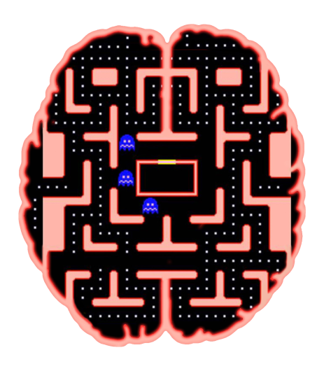

GamesCog
Home
Autor
Info
VJuegos Cognitivos
Bibliografía
Contacto
Bibliografía
Desarrollo Cognitivo y Videojuegos
Mejora de Habilidades Cognitivas mediante el uso de videojuegos
ESTUDIOS AFIRMAN QUE JUGAR A VIDEOJUEGOS MEJORA LAS HABILIDADES COGNITIVAS
PacMan Cognitivo
Funciones Cognitivas en juego con el PacMan
¿Qué funciones cognitivas ponemos en juego con el Pac-man?
Tetris Cognitivo
Efecto cognitivo del Tetris
Qué es el efecto Tetris